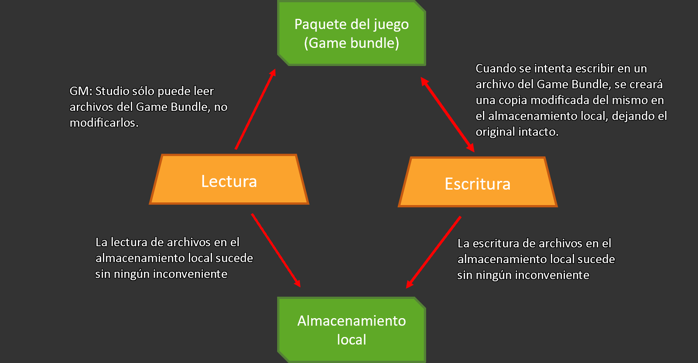

Anexo: Límites del sistema de archivos
Antes de utilizar las funciones de sistemas de archivos incluídas en GameMaker: Studio, es de vital importancia saber exactamente cómo funcionan y lo que está sucediendo detrás de escena. Con ese fin, esta sección está escrita para explicar y aclarar exactamente cómo y dónde los archivos son almacenados, y los límites que presentan estos sistemas.
-
Sandbox
Lo primero (y más importante) que hay que aclarar es que las funciones de archivos están limitadas (en general) a una sandbox. Esto significa que GameMaker: Studio no puede guardar o cargar archivos que no hagan parte del directorio local o paquete del juego sin la intervención explícita del usuario, la cual está limitada únicamente a las plataformas Windows y Mac.
Paraentender la sandbox, es necesario entender que hay dos áreas de archivos distintas:
- El paquete del juego: (Game bundle) Ésta es la ubicación en donde se encuentra almacenado el ejecutable del juego, incluyendo los archivos añadidos en la lista de recursos Incluided Files en el IDE.
- El área de guardado: (Almacenamiento local) Ésta es un área del alamcenamiendo del dispositivo en donde los archivos pueden escribirse y leerse por el juego de forma garantizada y segura.
El siguiente esquema explica la forma en la que la lectura y escritura de archivos funciona en cada una de las áreas anteriormente mencionadas:

NOTA: No es posible escribir en el paquete del juego.
-
Usando las funciones de archivos
Las dos áreas de archivos (game bundle y almacenamiento local) están disponibles en todas las plataformas, pero en cada una funcionan ligeramente diferente. Sin embargo
GameMaker: Studio ha abstraído la esencia principal de lo que se puede y
no se puede hacer, por lo que es más fácil adaptar los juegos a las diferentes plataformas.
Primeramente, es necesario entender lo que significa la variable working_directory. Ésta es un sinónimo de las dos ubicaciones mencionadas anteriormente. Cuando este directorio es utilizado, se tomará alguno de las dos áreas dependiendo de si se va a escribir o leer, y si el archivo ha sido modificado o no.
- Operaciones de lectura:
working_directory revisará primero el área de guardado (almacenamiento local) para comprobar si el archivo examinado está ahí; y si lo está, tomará éste área como directorio. Si, por el contrario, el archivo examinado no está en el almacenamiento local, se revisará el game bundle y si el archivo está ahí (o añadido en Incluided Files), se tomará este área como directorio.
- Operaciones de escritura: Esto sólo puede suceder en el área de guardado.
Con estas dos reglas, se tiene la siguiente información:
- Todas las funciones de directorios (ej:
directory_create()) funcionan únicamente en el almacenamiento local.
- Las funciones del sistema de archivos pueden leer archivos tanto del game bundle como del almacenamiento local, pero sólo pueden escribirlos en éste último.
- Las funciones de escritura de archivos (texto, binarios o INI) crearán un nuevo archivo en el almacenamiento local si éste no existe, copiando toda la información del archivo original en Incluided Files si éste existe.
NOTA: En la plataforma Windows, existe una única manera de guardar y cargar archivos por fuera de la sandbox (de forma nativa), y es usando las funciones get_open_filename() y get_save_filename(), que permiten abrir un cuadro de diálogo en donde el usuario podrá escoger manualmente el archivo que se desee abrir o guardar.
-
Ubicación en cada plataforma
Dependiendo del sistema operativo en el que se esté ejecutando el juego, las rutas del almacenamianto local y el game bundle pueden variar según la siguiente lista:
- En Windows: %localappdata%/<Nombre del juego>, o bien %appdata%/<Nombre del juego> dependiendo de la configuración en Global Game Settings.
- Ubuntu (Linux): Home/.config/<Nombre del juego>.
- HTML5 / Windows 8 (JS): Todo el almacenamiento se realiza a través de LocalStorage (JS).
- iOS: El almacenamiento es la ubicación estándar.
- Android: data/data/<paquete del juego> (esta ubicación sólo es visible si el dispositivo está rooteado).
- Tizen: El almacenamiento es la ubicación estándar.
- Windows phone: La ubicación es la misma de la aplicación.
Mientras que en algunas plataformas es posible acceder a un archivo mediante simplemente la ruta relativa del mismo, en algunos dispositivos (Android, iOS y Windows Phone) es necesario utilizar como prefijo la variable working_directory para acceder a los archivos.
Cabe mencionar que en las plataformas HTML5 y Windows 8, el almacenamiento tiene un límite de entre 1MB y 5MB.